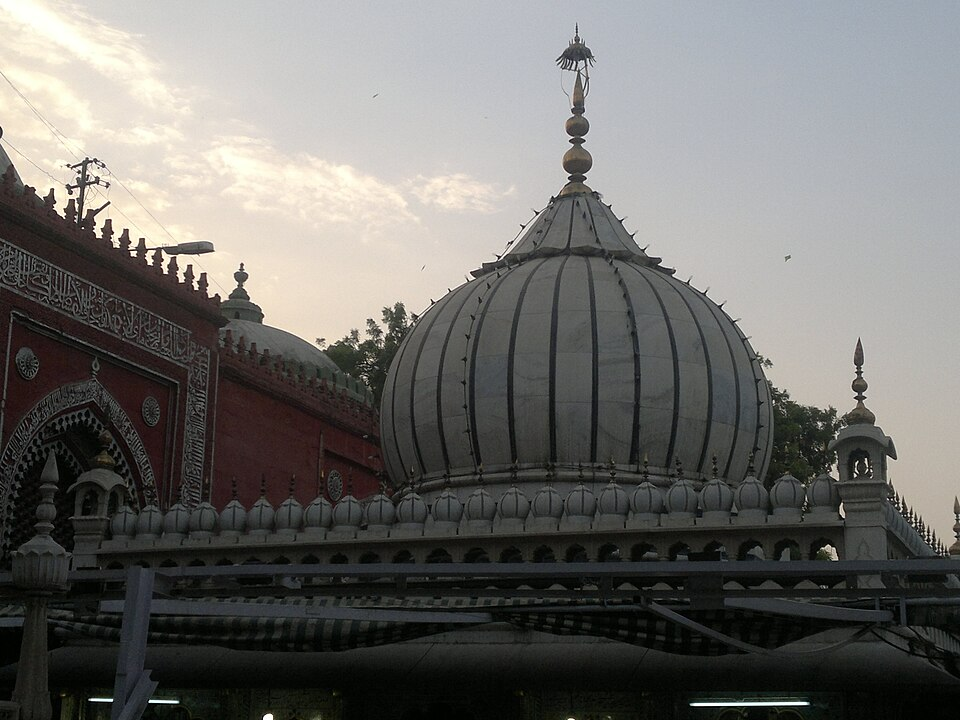

Core Content
EXAM TIP
Bhakti + Sufi (8th-17th century CE): Two parallel devotional movements. Bhakti originated in Tamil Nadu (Alvars=Vishnu, Nayanars=Shiva, 7th-9th c.), spread North. Two streams: Saguna (with form — Krishna/Rama: Mirabai, Tulsidas, Surdas, Chaitanya) and Nirguna (formless — Kabir, Nanak). Key philosophers: Shankara (Advaita), Ramanuja (Vishishtadvaita), Madhva (Dvaita), Nimbarka (Dvaitadvaita), Vallabhacharya (Shuddhadvaita). Sufi orders (silsilas): Chishti (Muinuddin Ajmer, Nizamuddin Delhi), Suhrawardi (Bahauddin Zakariya Multan), Qadiri, Naqshbandi. Both movements rejected caste, used vernacular languages, emphasised direct devotion to God.

Nizamuddin Dargah (Delhi) — the shrine of Khwaja Nizamuddin Auliya (1238–1325 CE), one of the greatest Sufi saints of the Chishti order. His disciple Amir Khusrau (1253–1325) is considered the father of Urdu poetry and Hindustani classical music. The Chishti order emphasised love, devotion, and service to humanity — the core of Sufi philosophy that paralleled the Bhakti movement.

Bihar's spiritual heritage — the Sufi tradition in Bihar includes Maner Sharif (dargah of Sharfuddin Yahya Maneri, 13–14th c. CE, Makhdoom-e-Jahan of the Firdausi order), Phulwari Sharif (Patna, Pir Muzaffar Shams Balkhi, 14th c.), and Bihar Sharif (Nalanda, Chishti order). The Bhakti tradition in Bihar includes Vidyapati (Maithil Kokil, Krishna and Shiva padas) and the Mithila school of Vaishnavism.
💡 Deep-dive ready: Complete analysis of Bhakti saints, Sufi orders, philosophical schools, Bihar connections, and 7 exam predictions:
Bhakti & Sufi Master Detail →
A. Bhakti Movement — Two Streams EXAM CORE
| Stream | Meaning | Key Saints | Deity |
|---|---|---|---|
| Saguna Bhakti | Devotion to God with form/attributes | Mirabai, Tulsidas, Surdas, Chaitanya, Vallabhacharya | Krishna, Rama, Shiva (personal deity) |
| Nirguna Bhakti | Devotion to God without form/attributes | Kabir, Nanak, Raidas, Dadu Dayal | Formless (alakh, nirankar) |
B. Bhakti Movement — Key Saints (Chronological) PYQ PATTERN
| Saint | Period | Region | Stream | Key Contribution |
|---|---|---|---|---|
| Shankaracharya | 788-820 CE | Kerala → all India | Advaita (philosopher) | Advaita (non-dualism); 4 mathas; commentary on Upanishads, Gita, Brahma Sutras |
| Alvars (12) | 7th-9th c. CE | Tamil Nadu | Saguna (Vishnu) | Divya Prabandham (Tamil Veda); Andal (only woman Alvar) |
| Nayanars (63) | 7th-9th c. CE | Tamil Nadu | Saguna (Shiva) | Tevaram hymns; Appar, Sambandar, Sundarar, Manikkavasagar |
| Ramanuja | 1017-1137 CE | Tamil Nadu | Vishishtadvaita | Vishishtadvaita (qualified non-dualism); Sri Vaishnavism; Shribhashya |
| Madhvacharya | 1238-1317 CE | Karnataka (Udupi) | Dvaita | Dvaita (dualism); God and soul eternally separate; Dvaita Vedanta school |
| Nimbarka | 12th-13th c. CE | North India | Dvaitadvaita | Dvaitadvaita (dualistic non-dualism); first to worship Radha-Krishna together |
| Ramananda | c. 1400 CE | Varanasi (UP) | Saguna (Rama) | Disciple of Ramanuja; guru of Kabir, Raidas; accepted all castes; North Indian Bhakti pioneer |
| Kabir | 1440-1518 CE | Varanasi (UP) | Nirguna | Julaha (weaver); disciple of Ramananda; Bijak; rejected caste, idol worship; Kabirpanth |
| Vallabhacharya | 1479-1531 CE | Gujarat/UP | Shuddhadvaita | Shuddhadvaita (pure non-dualism); Pushti Marg (path of grace); Krishna (Srinathji) |
| Chaitanya | 1486-1534 CE | Bengal (Nadia) | Saguna (Krishna) | Gaudiya Vaishnavism; sankirtan (group singing); Krishna-Radha; ISKCON lineage |
| Mirabai | c. 1498-1546 CE | Marwar (Rajasthan) | Saguna (Krishna) | Rajput princess; Krishna (Giridhar Gopal); bhajans; rejected married life |
| Surdas | c. 1478-1581 CE | UP (Mathura region) | Saguna (Krishna) | Blind poet; Sur Sagar; childhood Krishna (Bal Krishna); disciple of Vallabhacharya |
| Tulsidas | 1532-1623 CE | Varanasi (UP) | Saguna (Rama) | Ramcharitmanas (Hindi Ramayana, c. 1574); Vinaya Patrika; cornerstone of Hindi literature |